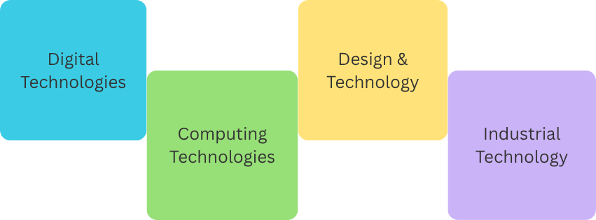

My name is Carina Gleeson and I am a Lecturer of COMP208 at the Australian Catholic University.
My Background
I graduated with a Bachelor of Media in Screen Production from Macquarie University and a Masters of Teaching from the University of New South Wales.
I draw upon my professional technology industry experience in streaming media and software engineering when speaking about workplace trends and the soft skills needed for technology careers.
My Teaching Experience
I have taught many technology and design-focused subjects in high schools. These are my main teaching areas:
I also contributed to the development of the recently implemented Stage 6 Software Engineering and Enterprise Computing courses with NESA.
I have served as a Board Member for the ICT Educators NSW teaching association, contributing to professional learning for STEM teachers.
I am passionate about providing enriching and engaging life-long learning opportunities for students
Practicum Placement Overview
| School | Subjects Taught | Year Level | Term |
|---|---|---|---|
| St Mark's | Stage 4 Digital Technologies | Year 7 | Term 4, 2024 |
| Pymble Ladies College | Stage 5 Textiles | Year 10 | Term 1, 2025 |